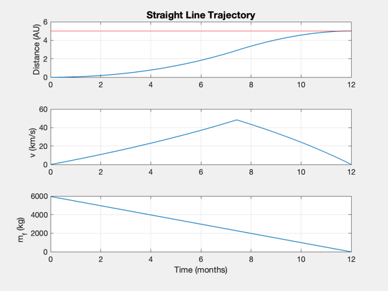
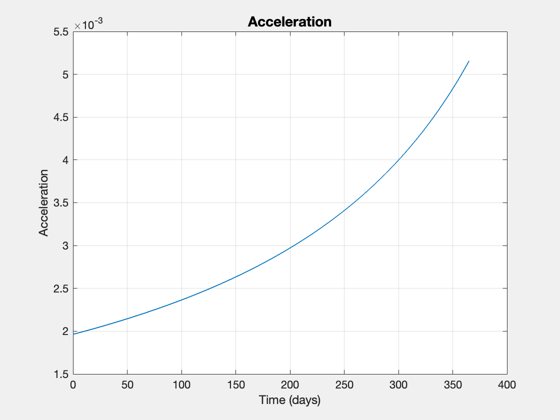

Straight line Point solution
See also: Straight2DStructure, ComputeThrust, SimulateStraightLineTrajectory, Plot2D
%-------------------------------------------------------------------------- % Copyright 2018 Princeton Satellite Systems, Inc. % All rights reserved. %-------------------------------------------------------------------------- % Constants au = Constant('au'); year = 365.25*86400; % Define the mission payload = 1000; % kg distance = 5*au; % km nYears = 1; % Define the engine uExhaust = 100; % km/s eta = 0.4; % fusion power to thrust efficiency sR = 0.05; % kg tank/kg fuel sigma = 1000; % W/kg % Put the data into the needed structure d = Straight2DStructure; d.mP = payload; % payload mass (kg) d.dF = distance; % distance traversed, km d.tF = nYears*year; % final time d.uE = uExhaust; % exhaust velocity, km/s d.f = sR; % fuel structural fraction (tanks) % additional fields for optimization d.sigma = sigma; % specific power, W/kg d.eta = eta; % thrust efficiency % Evaluate [thrust,data] = ComputeThrust( d, true ); % Simulate [xP,tP] = SimulateStraightLineTrajectory( data ); subplot(3,1,1) % x-axis in days, y-axis in AU text(25,5,sprintf('Payload: %d kg',payload)); text(25,4,sprintf('Power: %.02f MW',data.p*1e-6)); text(25,3,sprintf('Thrust: %.2f N',data.thrust)); text(25,2,sprintf('Mass: %.0f kg',data.m0)); yy = axis; hold on plot(yy(1:2),distance/au*[1 1],'r') massP = data.m0 - tP*thrust/(d.uE*1e3); accP = thrust./massP; Plot2D(tP/86400,accP,'Time (days)','Acceleration') %-------------------------------------- % $Id: 5522c8eb8328223e82667af8fae6f7acfc354dc3 $
Report:
---- INPUTS ---- -- --
Payload 1000 kg
Desired distance 5.00 AU
Travel time 1.00 years
---- ENGINE ---- -- --
Thrust Efficiency 0.40
Exhaust velocity 100 km/s
Specific Power 1.00 kW/kg
Fuel Tank Fraction 0.05
---- OUTPUTS ---- -- --
Payload Mass Fraction 0.10 mP/m0
Payload Power Fraction 2.36 kW/kg
Delta-V 96.65 km/s
---- PAYLOAD DEPENDENT ---- -- --
Thrust 18.87 N
Power 2.36 MW
Total Mass 9612.75 kg
Mass Dry 3656.91 kg
Mass Engine 2359.11 kg
Mass Fuel 5955.84 kg
Flow Rate 0.19 g/s
 